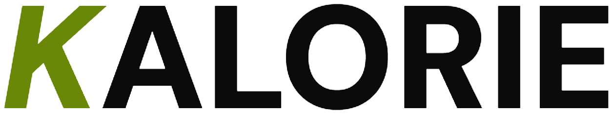

Kalorie
A case study: Calorie and macro tracking app prototype

Kalorie is an iOS app for tracking calories and macros. I designed it as a course project at the University of Cincinnati. I track what I eat myself, so I know the problem first-hand: logging every meal gets old fast. The whole design comes down to two things. Logging should take seconds, and your day should make sense at a glance.
- Product
- Kalorie (iOS)
- My role
- Product Designer
- Timeline
- March 2026 (1 month)
- Skills
- UI/UX design, User research, Figma, Interactive prototyping, Design systems, Data visualization
- Team
- Solo; it was a course project for my Digital Media class at the University of Cincinnati
Problem: Most calorie-tracking apps are too complex
Tracking food works. Sticking with it is the hard part. In a 2023 study in JMIR mHealth and uHealth, the most common reason people gave for quitting a nutrition app was the time it took (14 of 38 former users). One participant put it simply: “I had to type in the same food products over and over again.”
I’ve felt it myself as well. MyFitnessPal and Cal AI both do the job, but the screens are crowded, the ads (or paywalls) get in the way, and simple things take too many steps. None of that is a motivation problem, but rather a design problem.
Research
I started with my own habits. I used MyFitnessPal and Cal AI side by side, then asked about 10 friends and classmates who track calories (or used to) what bugs them, and read through App Store reviews of both apps. Three complaints came up again and again.
- Too many steps to logSearch, pick the right entry, set the portion, confirm. That many steps can be irritating for most users.
- Ads and paywallsMyFitnessPal breaks up the flow with ads. Cal AI, on the other hand, asks you to subscribe early, before you’ve really seen what it can do.
- Cluttered user interfaces and poor UXBoth apps pack a lot onto every screen. Cal AI’s photo logging is a nice idea, but the screens around it are cluttered and finding out how your day is going takes too much time and effort.
Solution: Less steps with more output
Kalorie is built on two ideas, which are: 1. Logging a meal should take as few steps as possible. 2. The numbers should tell you how your day is going without you having to dig. Six screens cover the whole daily loop: Home, Food Log, Add Food, the food detail screen, History and Profile.

- Category chips for better UX
- Understandable data
- More accent on calories left
- Streaks and weekly progress
Logging in a few taps
Too many steps was the biggest complaint, so Add Food is built to shortcut the search. Category chips (Protein, Grains, Veggies, Fruits, Dairy, Snacks) narrow the list in one tap, which helps most when you don’t know the exact name of what you ate. Your recent foods sit right there too, and search and barcode scan cover everything else.
In the Food Log, every meal has its own add button, and a floating Add Food button stays within thumb reach.
Easy-to-measure portions
Tap a food and you get its detail screen. Serving sizes are pills (½ cup to 3 cups) with a stepper for anything in between, and every nutrition value updates as you change them. The button says exactly what’s about to happen: Add to Log · 120 kcal, logged under Lunch, without an extra confirm screen.
Your day is easily visible
Home screen answers the main question that all users have: “how am I doing today?” A big ring shows calories against your goal, with what’s left right below it. Protein, carbs and fat each get a color-coded bar. Then quick stats for calories burned, water, net calories and your streak.
Progress that keeps you going
History turns a week of logging into something you can actually read. A streak card rewards showing up, with a personal record. A bar chart puts each day against a goal line: today in lime, days over goal in orange. Weekly average, days on goal and best day sit underneath, then a day-by-day breakdown.
Personalized goals
Profile is where the numbers on every other screen come from. You set your calorie and macro targets and your activity level here, and Home, the Food Log and History all measure against them.
Design system
I went dark with a single lime accent not without a reason. MyFitnessPal and Cal AI felt busy to me, and I wanted the opposite: something calm and closer to a fitness app than a spreadsheet. On a dark background the numbers pop, so progress reads at a glance. And honestly, it’s the look I like.
Lime only shows up for progress and actions, so it always means something. Under the hood, the file runs on Figma variables, components with variants and auto layout, so every screen holds up across content lengths and iOS device sizes.
Impact: Idea to a clickable prototype in a month
In one month I took Kalorie from a problem I had myself to a Figma prototype (it’s at the top of this page). I received the maximum grade in my Digital Media class for it. My instructor and classmates gave good feedback after testing it, and people reacted a lot to it when I posted it on LinkedIn.
If I keep going, the first step is a real usability test: time how long it takes to log a typical meal, and check whether people get their day from Home in a few seconds. After that, photo logging (the part Cal AI gets right), a light mode, and building it as a real app.